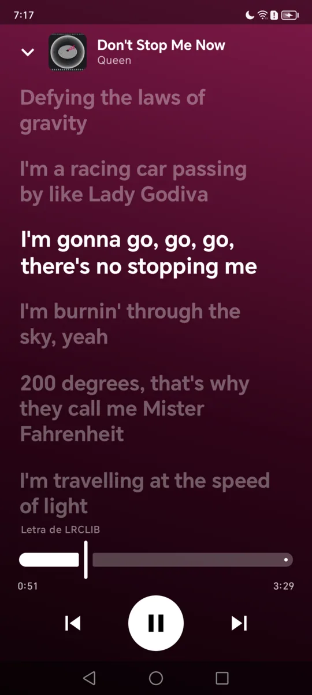
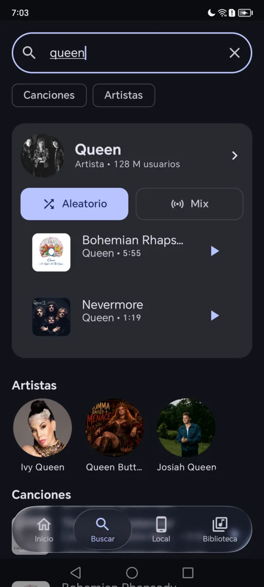

1Descripción
ExtMusic
Reproductor libre de YouTube Music sin cuenta y de la música guardada en tu teléfono.
Descargar APK v1.4.2 · 4,8 MB Código fuente
Android 8.0+ · GPL-3.0 · Sin cuenta · Sin anuncios · Sin analíticas
Busca y escucha el catálogo de YouTube Music sin iniciar sesión, descarga canciones para escucharlas sin conexión y reproduce tus archivos locales. Tu biblioteca se guarda solo en el teléfono. Todas las funciones están en la Tabla 1.

| N.º | Elemento |
|---|---|
| 1 | Portada. Su color tiñe todo el reproductor. |
| 2 | Línea de la letra sincronizada, en directo. |
| 3 | Indicador de calidad del audio (HQ). |
| 4 | Me gusta: guarda la canción en tu biblioteca. |
| 5 | Aleatorio, anterior, pausa, siguiente y repetir. |
| 6 | Cola: qué suena a continuación. |
2Funciones
| Función | Descripción | Requisito |
|---|---|---|
| Búsqueda | Canciones, artistas y álbumes de YouTube Music, con filtros. Sin iniciar sesión. | Conexión a internet |
| Radio | Al terminar la cola sigue con canciones parecidas (radio de YouTube Music). | Se puede desactivar |
| Biblioteca | Me gusta, playlists propias e importación de playlists de YouTube por enlace. | — |
| Reproducción | Cola editable (arrastrar para reordenar) y temporizador de sueño. | — |
| Inicio | Selección rápida, escuchar de nuevo y mixes de tus artistas. Opción «No recomendar». | — |
| Letras | Sincronizadas desde LRCLIB, con KuGou de respaldo, y archivos .lrc locales. Se pueden guardar para verlas sin conexión. | — |
| Descargas | Guarda canciones para escucharlas sin conexión, con la opción de descargar solo con Wi-Fi. | — |
| Música local | Reproduce la música del teléfono, con filtro por carpeta. | Permiso de audio |
| Normalización | Sube las canciones flojas y suaviza los picos de volumen. | Android 9+ |
| Apariencia | Temas claro, oscuro y AMOLED; fondo con el color de la portada; vidrio líquido. | Refracción: Android 13+ |
| Copia de seguridad | Exporta e importa me gusta, playlists, historial, cola y ajustes en un archivo .extmusic. | — |



3Novedades de la versión 1.4.2
Publicada el 25-11-2026 · notas oficiales de la versión
- Nuevo: la app te avisa cuando hay una versión nueva y la instala sola.
- Arreglo: las descargas ya no se quedan atascadas en algunos Wi-Fi.
- Arreglo: una descarga cortada ya no deja la canción dañada.
- Pide permiso para mostrar notificaciones la primera vez.
Cómo funciona la actualización: la app descarga la versión nueva desde GitHub, comprueba su huella SHA-256 y su firma, y abre el instalador de Android para que tú confirmes. Solo en la versión descargada de GitHub.
4Privacidad y especificaciones
| Parámetro | Valor | Notas |
|---|---|---|
| Versión | 1.4.2 | 25-11-2026 |
| Sistema | Android 8.0 (API 26) o superior | — |
| Tamaño del APK | 4,8 MB | ExtMusic-1.4.2.apk |
| Licencia | GPL-3.0-or-later | Software libre |
| Cuenta | No necesaria | — |
| Anuncios | Ninguno | — |
| Analíticas | Ninguna | Sin librerías de analíticas ni de informes de errores |
| Tus datos | Solo en el teléfono | Copia de seguridad exportable (.extmusic) |
| SHA-256 | 5c964566b91704ef26e2dc6f13758f6bcfd305b616ddf89def17c4b8e78a213c | |
| Servicio | Para qué |
|---|---|
music.youtube.com | Catálogo y búsqueda |
*.googlevideo.com | Audio de las canciones |
lrclib.net | Letras |
lyrics.kugou.com | Letras de respaldo |
api.github.com | Buscar actualizaciones (solo la versión de GitHub) |
| Permiso | Para qué |
|---|---|
INTERNET | Escuchar, buscar y obtener letras |
READ_MEDIA_AUDIO | Leer la música del teléfono |
FOREGROUND_SERVICE | Seguir sonando en segundo plano |
POST_NOTIFICATIONS | Controles en la notificación |
REQUEST_INSTALL_PACKAGES | Instalar actualizaciones verificadas |
Descárgala de la fuente oficial.
ExtMusic se publica solo en GitHub Releases. La versión de GitHub te avisa de las nuevas y comprueba la huella y la firma antes de instalarlas.
Descargar ExtMusic 1.4.2 4,8 MBComprueba el archivo
sha256sum ExtMusic-1.4.2.apk 5c964566b91704ef26e2dc6f13758f6bcfd305b616ddf89def17c4b8e78a213c